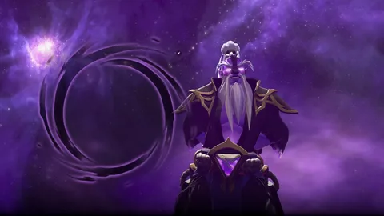
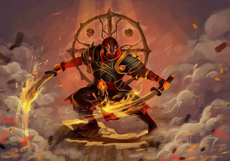
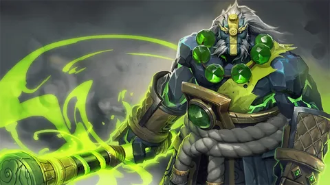
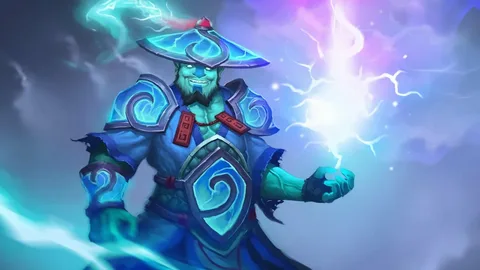
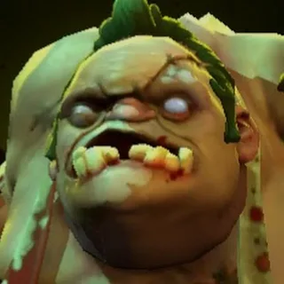
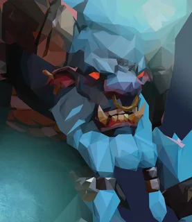

В Dota 2 сражаются две команды по пять игроков: Radiant и Dire. Каждая команда имеет свою базу на противоположных концах карты, и целью игры является уничтожение главного здания противника — Трона. Каждая база защищена башнями и подразделена на три линии (англ. lanes), по которым регулярно движутся волны союзных и вражеских крипов — управляемых ИИ существ.
Основная концепция
Игроки управляют уникальными персонажами, которых называют героями. В игре доступно более 120 героев, каждый из которых обладает своим набором способностей и уникальной ролью в команде. Героев можно разделить на несколько типов, такие как: Керри (Carry): основные герои, набирающие силу по ходу игры. Саппорты (Support): герои, помогающие союзникам в бою и обеспечивающие поддержку. Танки (Tank): герои, которые могут принимать на себя большое количество урона.
Dota 2 — это одна из самых популярных и влиятельных многопользовательских онлайн-игр жанра MOBA (Multiplayer Online Battle Arena), разработанная компанией Valve. Игра вышла в 2013 году и является сиквелом первой DotA (Defense of the Ancients), модификации для игры Warcraft III, которая заложила основы жанра.
Спириты




Играбельные герои

Пудж — это один из самых известных и знаковых героев Dota 2. Его часто выбирают как на профессиональных матчах, так и в обычных играх благодаря его мощным и уникальным способностям. Пудж — герой ближнего боя с большим запасом здоровья и высоким потенциалом для нанесения урона.

Баратрум, или Spirit Breaker, — это мощный танк и инициатор, известный своей агрессией и способностью перемещаться по карте с высокой скоростью. Его главная сила заключается в том, что он может внезапно нападать на врагов издалека, внушая страх и разрушая линии обороны противников.